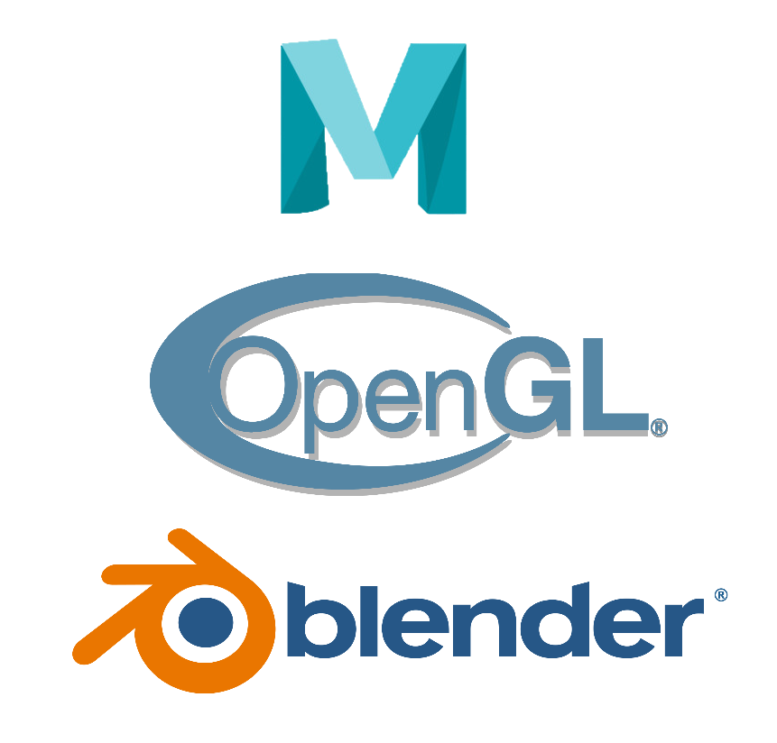

MODELANDO MEU PRIMEIRO PERSONAGEM
Software: Maya, 23 Jun, 2021
Nesse post vou mostrar um pouco sobre quais tecnologias e recursos foram utilizados para gerar meu primeiro personagem.
Let's get animated!
CRIANDO MINHA PRIMEIRA CENA
Software: Maya, 09 Ago, 2021

Neste post irei mostrar um pouco do processo de criação da minha primeira cena utilizando o software de modelagem Maya
Let's get animated!
Tecnologias Utilizadas

Post da Semana
Electrifying renders, creature modeling learning paths, and more! ✨ Check out our July monthly round-up for the latest in the world of 3D: https://t.co/w1woVvOxJt#3D #Roundup pic.twitter.com/lkHca10Eo0
— Autodesk Maya (@AdskMaya) August 6, 2021